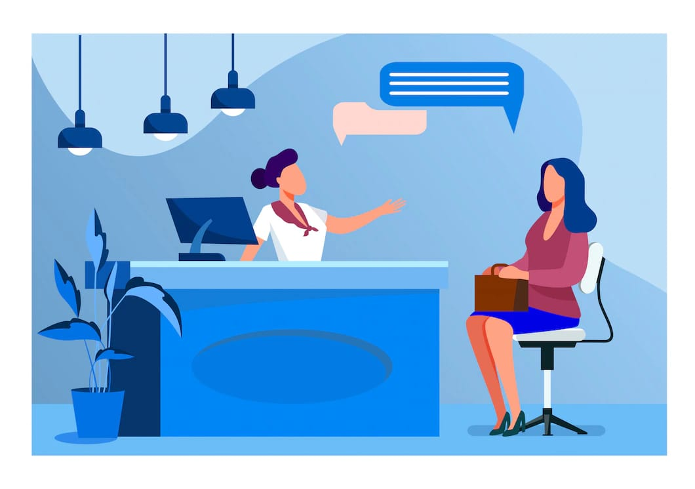

PRINSIP-PRINSIP PENGELOLAAN PUSAT SUMBER BELAJAR SEBAGAI KUNCI UNTUK MEMFASILITASI SISWA MEMASUKI ERA REVOLUSI INDUSTRI 4.0
Tugas Akhir Mata Kuliah: Pengelolaan Pusat Sumber Belajar
Dosen Pengampu: Dr. Khaerudin, M.Pd.
A. Latar Belakang
Era revolusi industri 4.0 telah menyapa kita sejak 2011 silam. Era ini dicetuskan pertama kali oleh sekelompok perwakilan ahli berbagai bidang asal Jerman, tepatnya di acara Hannover Trade Fair. Era revolusi industri 4.0 ditandai dengan meningkatnya konektivitas, kecerdasan artifisial, interaksi dan perkembangan sistem digital, serta virtual. Makin menipisnya batas antara manusia, mesin, dan teknologi, jelas akan berpengaruh pada pelbagai bidang aktivitas. Satu di antaranya ialah sistem pendidikan di negara ini. Perkembangan teknologi tidak dapat dihindari oleh siapa pun sehingga diperlukan penyiapan sumber daya manusia (SDM) yang memadai agar siap menyesuaikan dan mampu bersaing dalam skala global.
Setiap manusia, pada hakikatnya adalah seorang pemelajar. Manusia telah menerima berbagai pengetahuan, keterampilan, dan ajaran-ajaran untuk bersikap dari orang tua atau pengasuhnya sejak lahir. Proses belajar berlangsung secara kontinu dan kian bertambah seiring usianya. Belajar merupakan kebutuhan dan kewajiban manusia untuk bisa menjalani kehidupan sehingga di masa depan dirinya akan memiliki kekuatan pengetahuan dan keterampilan untuk mengambil peran dalam kehidupan.
Menyadari pentingnya belajar bagi setiap insan, maka perlu diperhatikan pula keberadaan sumber belajarnya. Sebab, dari sumber belajar itu manusia dapat melakukan proses belajar. Sumber belajar adalah segala sesuatu, baik berupa benda, data, fakta, ide, orang, dan sebagainya yang mampu menimbulkan proses belajar. Sumber belajar yang efektif menurut Perceival dan Ellington dalam Andi Prastowo, harus memenuhi tiga syarat, yaitu: (1) tersedia dengan cepat, (2) memungkinkan siswa memacu diri sendiri, (3) bersifat individual.
Di era revolusi industri 4.0 ini, internet memberikan kemungkinan bagi seseorang untuk terhubung dan mengakses berbagai sumber belajar online yang dibutuhkan. Sumber belajar digital membuat proses belajar bisa berlangsung di mana dan kapan saja sesuai dengan kesiapan diri dan waktu masing-masing pemelajar. Pembelajaran juga bisa bisa terjadi dari tempat yang terpisah antara pengajar dan pemelajar sehinnga kendala jarak dapat diatasi. Semua terasa begitu fleksibel. Namun, untuk melakukan semua itu, jelas membutuhkan sumber daya manusia yang memiliki kualitas dan cakap dalam menggunakan teknologi informasi dan komunikasi serta biaya untuk mengadakan perangkat lunak maupun keras.
Tantangan perkembangan teknologi informasi dan komunikasi, menurut Hasan Chabibie, berdampak penting bagi dunia pendidikan. Meski ada pengaruh yang dapat mengganggu tujuan pendidikan, seperti ketergantungan peserta didik dalam menggunakan gawai elektronik dan maraknya konten internet yang bertentangan dengan tujuan pendidikan, sisi positif dari internet untuk menunjang proses pembelajaran juga banyak. Oleh karenanya, inovasi teknologi sebaiknya direspons oleh pelaku pendidikan, dari pemerintah, guru hingga komunitas pendidik sebagai peluang strategis dunia pendidikan untuk ditingkatkan kualitasnya.
Respons tersebut sangat terkait dengan kondisi sumber belajar yang sesungguhnya ada dan dapat dimanfaatkan oleh pemelajar. Sebab, meski kita sadari bahwa perkembangan teknologi informasi dan komunikasi itu ada, namun belum semua masyarakat Indonesia terutama peserta didik yang melakukan proses belajarnya di sekolah, madrasah, bahkan hingga perguruan tinggi bisa mengakses dengan mudah sumber belajar yang dibutuhkan. Bahkan perpustakaan yang dipandang sebagai tahapan yang sederhana dari pusat sumber belajar, banyak yang terbengkalai. Minim pengelolaan dan bahkan sepi pengunjung.
Pengelolaan pusat sumber belajar di berbagai jalur pendidikan formal, nonformal, maupun di informal perlu diperhatikan. Bagaimana agar pengelolaan sumber belajar ini benar-benar bisa memberikan dukungan positif bagi peningkatan kualitas SDM. Tidak hanya penyediaan sumber belajar yang berkualitas, dalam bentuk koleksi cetak maupun digital, tetapi juga ada upaya-upaya untuk meningkatkan minat baca dan kebermanfaatannya secara strategis. Sehingga, untuk mencapai semua itu diperlukan perhatian lebih dalam menerapkan prinsip-prinsip pengelolaan pusat sumber belajar secara utuh.
B. Masalah/Tujuan Pembahasan
Berdasarkan uraian tersebut, artikel ini dibuat untuk memberikan gambaran bagaimana pusat sumber belajar dapat memfasilitasi siswa di era revolusi industri 4.0 secara maksimal dengan memperhatikan prinsip-prinsip pengelolaan pusat sumber belajar.
C. Kajian teori/konsep/pendapat ahli
A. Sumber Belajar dan Pusat Sumber BelajarDalam beberapa literatur telah banyak yang mengulas apa itu sumber belajar. Namun, secara umum sumber belajar memiliki definisi sebagai segala sesuatu yang dapat digunakan oleh siswa untuk meningkatkan pemahamannya serta digunakan sebagai fasilitas pembelajaran baik itu berupa data, manusia, atau benda. Di lain pihak, banyak tokoh pendidikan yang menyebutkan bahwa segala sesuatu yang dapat memungkinkan siswa untuk belajar, maka disebut sebagai sumber belajar.
Adanya sumber belajar harus bisa dimanfaatkan oleh siapapun dalam melaksanakan aktivitas pembelajaran. Dalam hal ini termasuk peserta didik. Sumber belajar sepatutnya tidak boleh dikotomikan dengan kehadiran peserta didik sebagai subjek belajar, atau hanya peserta didik tertentu yang dapat menggunakan sumber belajar. Terbaiknya adalah bagaimana sumber belajar dapat dirasakan manfaat dan kegunaannya oleh semua individu yang sedang atau inginn melakukan pembelajaran. Oleh karena itu, seiring berjalannya waktu agar sumber belajar dapat memfasilitasi semua siswa saat belajar, maka hadirlah sebuah pusat sumber belajar.
Sederhananya, kumpulan dari beberapa sumber belajar yang terintegrasi disebut juga sebagai pusat sumber belajar. Dikatakan sebagai pusat sumber belajar ketika didalamnya terkumpul berbagai varian sumber belajar menjadi satu kesatuan utuh sehingga dapat diakses atau digunakan oleh siswa secara praktis dan efisien. Pusat sumber belajar merupakan bentuk bangunan mulai dari yang sederhana sampai yang rumit dan lengkap, yang dirancang dan diatur secara khusus dengan tujuan menyimpan, merawat, mengembangkan dan memenfaatkan koleksi sumber belajar dalam berbagai bentuknya baik secara indibvidual maupun kelompok. PSB di pandang sebagai suatu kegiatan yang terorganisasi, terdiri dari direktur PSB, staf, peralatan dan bahan-bahan pembelajaran yang ditempatkan dalam suatu lokasi yang mempunyai fasilitas khusus untuk perencanaan, pemmbuatan, penyajian, pengembangan dan pelayanan.
Demikian pula, adanya pusat sumber belajar diharapkan dapat merangsang peserta didik agar menambah pengetahuannya secara kreatif dan mandiri. Kualitas pendidikan diharapkan tetap terus berkembang pesat melalui kemudahan akses dalam memperoleh sumber-sumber belajar yang dibutuhkan. Hal ini selaras dengan tujuan hadirnya pusat sumber belajar yaitu untuk meningkatkan efektivitas dan efisiensi aktivitas pembelajaran antara peserta didik dan pendidik melalui upaya pengembangan instruksional.
B. Era Revolusi Industri 4.0Era revolusi industri 4.0 mengharuskan masyarakat menggunakana jaringan internet untuk bisa berkomunikasi dan terhubung satu sama lain. Konsep digitalisasi dalam berbagai keperluan komunikasi sangat menonjol. Seperti media-media komunikasi yang dulu dibuat tercetak, mulai dibuat atau ditransformasi dalam bentuk digital. Termasuk sumber-sumber belajar cetak, misalnya buku, poster, modul pembelajaran, grafik, gambar dan sebagainya banyak yang sudah dialihkan dalam bentuk digital. Perpustakaan yang dulu menyediakan koleksi buku-buku cetak, kini dalam perkembangan teknologi membuatnya perlu meningkatkan koleksi dan pelayanan dalam bentuk digital.
Sebagaimana yang dikatakan oleh Nur Halimah Siahaan, persiapan dalam menghadapi revolusi industri 4.0 ini berawal dari kesiapan pembelajaran atau pelatihan teknologi kepada sumber daya manusia khususnya tenaga pendidik (dosen atau peneliti) agar terbentuk tenaga pendidik yang kompetitif, handal, dan berdaya saing. Pengajar, guru, dosen perlu meningkatkan kemampuannya dan selalu bersemangat untuk mempelajari hal-hal baru agar bisa menyelenggarakan proses pembelajaran yang berkualitas dan tepat pada perkembangan yang dialami oleh peserta didik. Keberadaan PSB diharapkan mampu memfasilitasi semua itu.
C. Prinsip-prinsip Pengelolaan PSB di Era Revolusi Industri 4.0Pengembangan PSB dilakukan untuk mencapai tujuan pembelajaran, sesuai dengan karakteristik peserta didik dan memberikan kemudahan bagi peserta didik dalam belajar. Dengan begitu orientasi mendasar pengembangan PSB ialah pada peserta didik. Peningkatan kualitas pengajar melalui PSB juga dilakukan dengan tujuan agar bisa menyelenggarakan pembelajaran yang bermakna bagi peserta didik. Untuk mengatasi permasalahan pengembangan tersebut maka perlu diketahui beberapa prinsip yang mesti diterapkan dalam pengelolaan PSB itu sendiri.
Prinsip-prinsip pengelolaan Pusat Sumber Belajar menurut Dr. Eveline Siregar, M.Pd. dan Dr. Cecep Kustandi, M.pd. dalam bukunya Inovasi Pusat Sumber Belajar adalah sebagai berikut.
1. Prinsip Pengelolaan Pusat Informasi
Dalam membentuk suatu pusat informasi sebagai salah satu
kegiatan yang ada di dalam suatu Pusat Sumber Belajar,
maka dapat dirancang dengan menjawab beberapa pertanyaan -
berikut terlebih dahulu.
- Informasi apa yang diperlukan?
- Siapa yang memerlukannya?
- Untuk apa diperlukan?
- Apakah memang sering diperlukan?
- Adakah informasi dalam bentuk cetakan atau dalam bentuk
media lainnya?
Salah satu tugas penting jika ingin mengadakan pusat informasi adalah membuat database. Database digunakan untuk mengetahui bagaimana informasi diorganisasikan dan dibentuk. Di Era revolusi industri 4.0 ini perlu diadakan pergantian dari sistem manual ke sistem komputer. Mulai dari sistem informasi PSB itu sendiri, pengolahan bahan pustaka, pembuatan katalog dan memproses non-print material, serta pengolahan bahan bukan buku.
Sebagai kesimpulan dapat dikatakan bahwa pertimbangan yang paling utama adalah mengetahui cara kerja peralatan yang ada dan dana yang tersedia serta mengetahui secara tepat apa yang diharapkan dari sistem yang menggunakan peralatan komputer tersebut.
2. Prinsip Pengelolaan Pelayanan Pelayanan PSB adalah suatu kegiatan penyelesaian, pengadaan, pembinaan koleksi serta pengaturan dan penyampaian bahan pustaka kepada pengunjung/ pemakai perpustakaan. Tiga karakteristik pelayanan yang harus diperhatikan, antara lain:
- Mudah dimengerti. Menggunakan cara yang mudah dimengerti
oleh pengunjung atau pemakai maupun oleh petugas itu
sendiri.
- Efisien dan ekonomis. Menggunakan peralatan atau
bahan-bahan pelengkap sesedikit mungkin macamnya.
- Kelambatan yang minimal. Mengusahakan tidak adanya
kelambatan dalam melayani pemakai, jikalau ada hendaknya
diperkecil.
Tujuan dari seluruh kegiatan pelayanan di sebuah PSB adalah ingin menyampaikan jasa bantuan pemakaian bahan pustaka kepada pemakai agar dapat dimanfaatkan sebaik-baiknya. Pada kegiatan pelayanan pembaca (pelayanan referensi, pelayanan sirkulasi, dll.) petugas/pustakawan berhadapan langsung dengan pemakai, sedangkan pada pelayanan teknis petugas semuanya berada di ruang kerja (berada di balik layar) atau dapat pula bersifat digitalisasi.
3. Prinsip Pengelolaan Pengembangan Instruksional
Fungsi PSB sebagai pengembangan bahan instruksional secara
umum adalah menolong jurusan, pembelajar secara individual
di dalam membuat rancangan dan pemilihan untuk
meningkatkan efektivitas dan efisiensi proses
pembelajaran.
Pengembang instruksional yang bekerja di PSB hendaknya
memiliki kompetensi dalam bidang pengelolaan dan telah
memperoleh pendidikan dan latihan khusus, memiliki
pengalaman yang cukup, pengetahuan yang luas, penampilan
yang meyakinkan dan menguasai bidang evaluasi. Apabila
dirinci, secara garis besar kompetensi yang harus dimiliki
oleh pengembang instruksional antara lain adalah:
Mampu memilih proyek untuk pengembangan instruksional
Mampu menggali penjajagan kebutuhan (needs assessment)
Mampu menjajagi karakteristik pemelajar
Mampu menganalisis jenjang pekerjaan dan tugas serta
isinya
Mampu menyebutkan hasil belajar pemelajar
Mampu menganalisis karakteristik setting
Mampu mengurutkan hasil belajar
Mampu mengspesifikasikan strategi instruksional
Mampu mengurutkan kegiatan instruksional
Mampu memilih sumber belajar
Mampu menciptakan spesifikası kegiatan instruksjonal
Mampu mencari bahan instruksional
Mampu mempersiapkan spesifikasi bahan untuk diproduksi
Mampu mengevaluasi instruksional atau latihan
Mampu menentukan sistem pengelolaan suatu kursus atau
latihan
Mampu mengembangkan suatu perencanaan proyek pengembangan
lokakarya instruksional
Mampu memonitor proyek pengembangan instruksional
Mampu berkomunikasi baik secara lisan maupun tertulis
sesuai dengan standar yang baku
Mampu mendiskusikan penelitian dan teori
Memiliki keterampilan sebagai konsultan
Mampu menggunakan keterampilan sebagai fasilitator dengan
benar dalam proses kerja kelompok
Mampu merangsang dan menyebarluaskan pengembangan
instruksional
Dalam hal pengelolaan produksi ini berkaitan dengan materi
atau bahan yang menjadi program instruksional. Ada tiga
tahap yang harus dilakukan di pengelolaan prinsip
produksi, antara lain:
a). Lakukan Identifikasi dan Analisis Masalah
Komunikasi
Perlu diketahui apa problem komunikasi yang perlu
dipecahkan menggunakan media instruksional? Apakah media
yang akan diproduksi itu sudah tepat? Untuk menjawab
pertanyaan tersebut, maka dalam tahap ini harus dilakukan
penelitian untuk membuat perencanaan yang matang yang
meliputi garis besar isi pesan, audience analysis, tujuan
program, alasan pemilihan media, bagaimana produksi yang
sesuai serta bagaimana penyebarannya.
b). Merancang dan Memproduksi Pesan Rancangan
Selanjutnya ialah buat rancangan spesifik yang bersifat
teknis, misalnya, menuliskan treatment dalam naskah.
Setelah naskah lengkap dengan treatment maka dapat dibuat
storyboard. Apabila produksi dikerjakan di dalam PSB
sendiri, maka perlu diperhatikan hal-hal sebagai berikut,
- Siapkan catatan produksi meliputi: storyboard dan
shootingscript, biaya produksi, jadwal pelaksanaan
produksi, daftar peralatan dan perlengkapan, persiapan
studio, membuat diagram yang diperlukan.
- Buat perincian detail dari tiap pesan. Misalnya, bila
memproduski program televisi, bagaimana sauna (scene) dan
dekorasi, dsb. - Apabila produk berupa media cetak maka
sebelum dicetak perlu diedit. Setelah diedit, ditunjukkan
kepada calon pembaca untuk memperoleh tanggapan dan saran
sebagai bahan revisi. Sesudah revisi barulah siap cetak.
- Mengadministrasikan fasilitas dan personalia produksi
media. Yang dimaksud dengan administrasi di sini adalah
pengaturan pelaksanaan produksi.
Prinsip pengelolaan pusat sumber belajar merupakan panduan
yang diterapkan dalam mengelola sebuah pusat sumber
belajar agar dapat memberikan manfaat maksimal bagi para
penggunanya. Beberapa prinsip pengelolaan PSB selain yang
dijabarkan di atas, antara lain adalah:
- Keberlanjutan: PSB harus dikelola secara terus-menerus
dan efisien agar dapat memberikan manfaat bagi penggunanya
secara berkelanjutan.
- Kemudahan akses: PSB harus memastikan bahwa seluruh
sumber belajar yang tersedia dapat diakses dengan mudah
oleh pengguna.
- Keterbukaan: PSB harus memberikan informasi yang
transparan mengenai sumber belajar yang tersedia, serta
menyediakan mekanisme yang memudahkan pengguna untuk
mengajukan pertanyaan atau meminta bantuan.
- Kepuasan pengguna: PSB harus memastikan bahwa pengguna
merasa puas dengan layanan yang diberikan, serta
memberikan umpan balik yang membantu dalam proses
pengembangan LRC.
Di era revolusi industri 4.0, PSB memegang peran yang
sangat penting dalam menyediakan sumber belajar yang
diperlukan oleh para pemelajar dan profesional untuk terus
belajar dan meningkatkan kemampuan mereka. Dengan
menerapkan prinsip pengelolaan yang tepat, PSB dapat
membantu para penggunanya untuk terus belajar dan
meningkatkan kompetensi mereka sesuai dengan tuntutan era
revolusi industri 4.0.
D. Kesimpulan
Penerapan prinsip pengelolaan pusat sumber belajar (PSB) sangat penting karena PSB merupakan salah satu sumber belajar yang dapat membantu siswa dalam proses pembelajaran. Prinsip pengelolaan PSB yang baik akan memastikan bahwa sumber belajar yang tersedia di PSB tersebut dapat digunakan dengan optimal oleh siswa, sehingga dapat membantu siswa dalam meningkatkan kemampuan dan pengetahuan mereka.
Di era revolusi industri 4.0, penerapan prinsip pengelolaan PSB juga tak kalah penting karena era ini ditandai dengan perkembangan teknologi yang sangat cepat. Dengan demikian, siswa perlu memiliki akses yang mudah ke sumber belajar yang terbaru dan terkini, yang dapat membantu mereka untuk terus memperluas pengetahuan dan kemampuan mereka. Penerapan prinsip pengelolaan PSB yang baik dapat memastikan bahwa siswa memiliki akses ke sumber belajar yang tepat sesuai dengan kebutuhan dan tingkat kemampuan mereka, sehingga dapat membantu siswa dalam menyiapkan diri untuk menghadapi era revolusi industri 4.0.
E. Daftar Pustaka
Baenanda, L. (2019, May 02). Mengenal Lebih Jaub Revolusi
Industri 4.0. Retrieved from Binus University:
https://binus.ac.id/knowledge/2019/05/mengenal-lebih-jauh-revolusi-industri-4-0/
Hasanah, A. (2020). Pusat Sumber Belajar PAI dalam Dunia
Pendidikan; Sebuah Kajian Kritis dan Pengembangannya.
Edupedia, 79-89.
Lasa, D. (2019). Pendidikan di Era Revolusi Industri 4.0.
Jurnal Sundermann, 29-43.
Sari, P. (2021). Manajemen Strategik Pusat Sumber Belajar
di Era Revolusi Industri 4.0. ACIEM, 578-590.
Siregar, E., & Kustandi, C. (2015). Inovasi Pusat Sumber
Belajar. Jakarta: FIP UNJ.